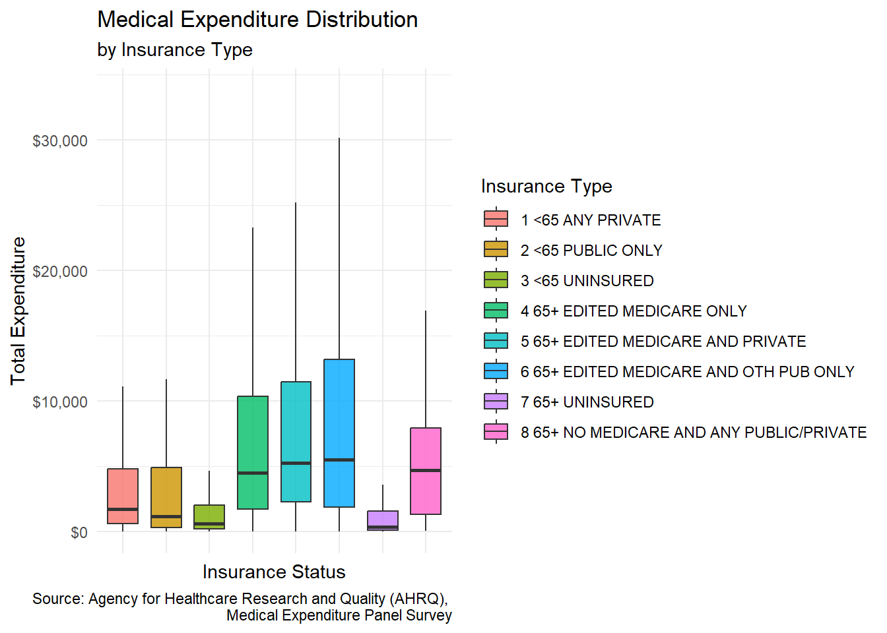
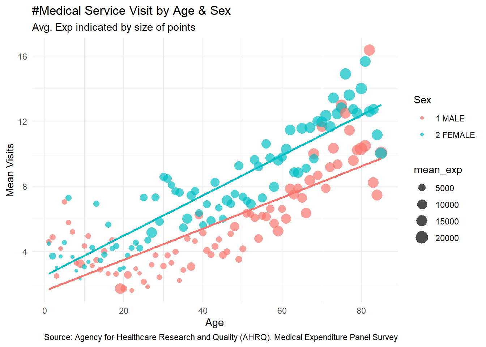
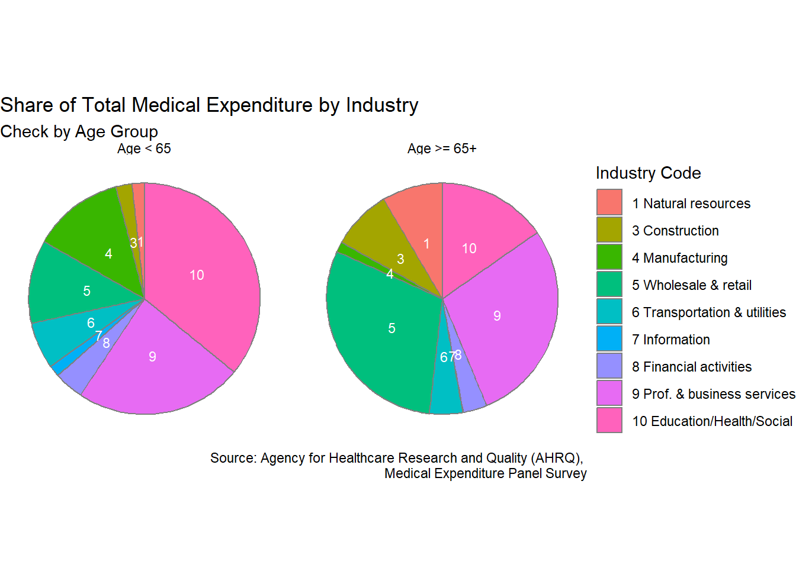

# Data source: https://www.meps.ahrq.gov/mepsweb/
# Data viz preparing
library(ggplot2)
library(tidyverse)
library(scales)
data <- read.csv("C:/Users/Whatsername/Desktop/Intro to Data Science/assignment04/MEPS2022.csv")
#Due to the federal government shutdown, the data's URL is currently inaccessible. So, we set up totally identical folder paths on our respective PCs to allow the code to load the same csv file. (Qingfeng Yu, Oct 5)
data <- select(data, AGE22X, TOTEXP22, RACETHX, HWELLSPK, SEX, INSURC22, OBTOTV22, ERTOT22, INDCAT53)index
# 1st visualization
data |>
group_by(INSURC22) |>
summarize(mean_exp = mean(TOTEXP22, na.rm = TRUE)) |>
ggplot() +
geom_col(mapping = aes(x = factor(INSURC22), y = mean_exp,
fill = factor(INSURC22)), width = 0.7, alpha = 0.8) +
scale_y_continuous(labels = dollar) +
labs(x = "Insurance Status", y = "Mean Expenditure", fill = "Insurance",
title = "Average Medical Expenditure",
subtitle = "Exp by Insurance Type",
caption = "Source: Agency for Healthcare Research and Quality (AHRQ), Medical Expenditure Panel Survey") +
theme_minimal() +
theme(axis.text.x = element_blank())
Interpretation:
We can see from the visualization that people without insurance have the lowest medical expenditure, even for those who are over 65. Since the expenditure variable we used include both out-of-pocket and insurance covered expenditure, the reason for the low expenditure of the uninsured could be driven by the fact that these people choose not to receive medical services as they couldn’t afford. As Medicare should be accessible to those who are over 65, these uninsured people over 65 worth our attention: maybe they lack necessary community support helping them to access Medicare.
# 2nd visualization
data |>
group_by(AGE22X, SEX) |>
summarize(mean_visits = mean(OBTOTV22, na.rm = TRUE),
mean_exp = mean(TOTEXP22, na.rm = TRUE)) |>
filter(AGE22X > 0) |>
ggplot(aes(x = AGE22X, y = mean_visits,
color = SEX, size = mean_exp)) +
geom_point(alpha = 0.7, shape = 16) +
labs(x = "Age", y = "Mean Visits",
color = "Sex",
title = "#Medical Service visit by Age & Sex",
subtitle = "Avg. Exp indicated by size of points",
caption = "Source: Agency for Healthcare Research and Quality (AHRQ), Medical Expenditure Panel Survey") +
theme_minimal()
Interpretation:
We can observe clearly from the visualization that medical service visit and medical expenditure increase by age, and that female visited medical services much more than male basically across all age. However, through the size of the points which is the average expenditure, male and female does not differ much, especially for those who are over 60. Although further investigation needed, it could be that women are more health conscious, so they visited hospitals more but they avoided severe diseases/large expenditure, while men visit hospitals less but their health problems are more severe. This could be useful for social security/Medicare policy makers; they could launch more gender specific programs, rather than the plain $170 insurance plan per month for everyone.
# 3rd visualization
data |>
mutate(Insured = if_else(condition = INSURC22 %in% c("1 <65 ANY PRIVATE",
"2 <65 PUBLIC ONLY",
"4 65+ EDITED MEDICARE ONLY",
"5 65+ EDITED MEDICARE AND PRIVATE",
"6 65+ EDITED MEDICARE AND OTH PUB ONLY"),
true = 1,
false = 0)) |>
mutate(Age_group = if_else(condition = AGE22X >= 65,
true = "Age >= 65",
false = "Age < 65")) |>
group_by(RACETHX, Age_group) |>
filter(AGE22X > 0) |>
summarize(prop_insured = mean(Insured)) |>
ggplot(aes(x = RACETHX, y = prop_insured, fill = RACETHX)) +
geom_col() +
scale_y_continuous(labels = scales::percent) +
facet_grid(~ Age_group) +
labs(x = "Race/Ethnicity",
y = "Insurance Coverage",
fill = "Race/Ethnicity",
title = "Insurance Coverage by Race & Age Group",
subtitle = "Insurance including both Public and Private",
caption = "Source: Agency for Healthcare Research and Quality (AHRQ), Medical Expenditure Panel Survey") +
theme_minimal() +
theme(axis.text.x = element_blank())Interpretation:
For age above and under 65, we can see very different insurance coverage status. Asian people has the highest insurance coverage among people who are under 65, and Hispanic people has the lowest - this could be driven by average income and job characteristics. The distribution among people who are 65 and above is interesting: Asian people become the lowest insured, other races do not differ much. At age 65 and above, people generally become eligible for Medicare, which raises coverage across all groups, but the reverse trend for Asian is curious. In my opinion, this could be driven by large portion of foreign-born Asian seniors who might not be eligible for Medicare. While we need further investigation, it should raise alerts for policy makers - is the current Medicare eligibility really appropriate?
# 4th visualization
pie_graph <- data |>
select(AGE22X, INDCAT53, TOTEXP22) |>
mutate(
AGE22X = ifelse(AGE22X < 0, NA, AGE22X),
INDCAT53 = ifelse(INDCAT53 < 0, NA, INDCAT53),
TOTEXP22 = ifelse(TOTEXP22 < 0, NA, TOTEXP22),
age65_lbl = if_else(AGE22X >= 65, "65+", "<65")
) |>
filter(!is.na(INDCAT53), !is.na(TOTEXP22), !is.na(age65_lbl)) |>
group_by(age65_lbl, INDCAT53) |>
summarise(exp_sum = sum(TOTEXP22, na.rm = TRUE), .groups = "drop_last") |>
group_by(age65_lbl) |>
mutate(
share = exp_sum / sum(exp_sum),
industry_code = parse_number(as.character(INDCAT53))
)
industry_labels <- c(
"1 Natural resources","2 Mining","3 Construction","4 Manufacturing",
"5 Wholesale & retail","6 Transportation & utilities","7 Information",
"8 Financial activities","9 Prof. & business services",
"10 Education/Health/Social","11 Leisure & hospitality",
"12 Other services","13 Public administration","14 Military","15 Unclassifiable"
)
ggplot(pie_graph,
aes(x = "", y = share, fill = factor(industry_code, levels = 1:15))) +
geom_col(width = 1, color = "grey50") +
coord_polar(theta = "y") +
facet_wrap(~ age65_lbl, nrow = 1) +
scale_fill_manual(
values = hue_pal()(15),
breaks = as.character(1:15),
labels = industry_labels,
name = "Industry Code"
) +
labs(
title = "Share of Total Medical Expenditure by Industry",
subtitle= "Two pies by age group (<65 and 65+); variable: TOTEXP22",
caption = "Source: Agency for Healthcare Research and Quality (AHRQ), Medical Expenditure Panel Survey"
) +
theme_void() +
theme(legend.position = "right")
Interpretation:
This visualization aims to explore the change in health condition after retirement by all industries. Total medical expenditure (TOTEXP22) measures one’s health condition. Age 65 is when most people start getting retirement benefits, and most people retire after 65. The two pies reveals that people in Natural resources(1), Construction(3), Wholesale/retail(5), and Prof. & business services(9) increase their medical expenditure drastically after 65. This sharp shift suggests that in certain specific industries, people’s health maybe deteriorates more rapidly after retirement. When making Medicare policies, policy makers should consider industrial differences and labor protection.